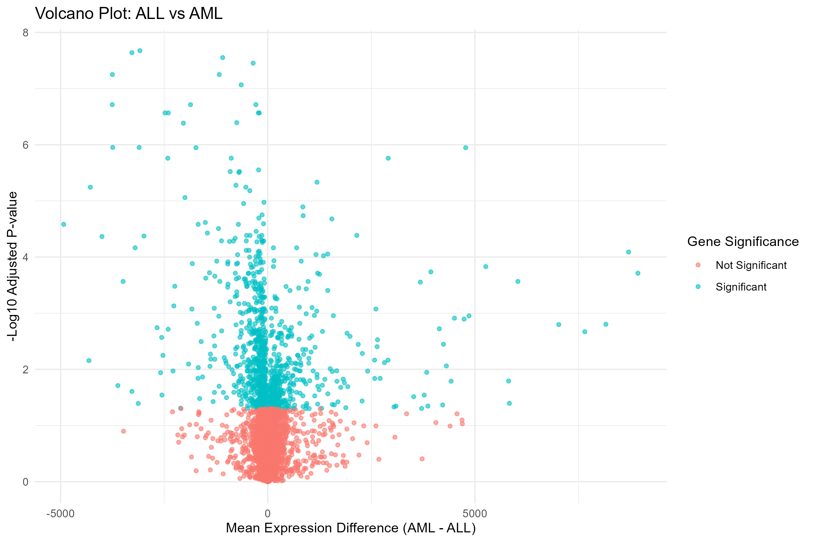

Distribution of ALL and AML Samples
BIOINFORMATICS AND COMPUTATIONAL BIOLOGY
Course Code: IT4133
In-Course Assessment: ICA 3
Registration Number: 2021ICT105
Acute Lymphoblastic Leukemia (ALL) and Acute Myeloid Leukemia (AML) are distinct forms of blood cancer. This project investigates whether gene expression profiles can distinguish these groups using the Golub leukemia dataset. The dataset comprises 7,129 microarray gene features measured across 72 samples (47 ALL and 25 AML). Analysis in R included data quality checks, exploratory visualisations, Welch’s t-tests with Benjamini–Hochberg adjustment, and a radial basis function Support Vector Machine (SVM). The analysis identified 1,056 significantly differentially expressed probes. An SVM using 50 training-selected features achieved 95.65% accuracy on a 23-sample holdout test set and 93.06% overall accuracy in stratified five-fold cross-validation. These findings support the usefulness of gene expression data for distinguishing ALL and AML within this dataset, although the small sample size limits generalisation.
Leukemia affects blood-forming tissues and can disrupt normal blood-cell production. ALL and AML involve different cell lineages, making accurate subtype identification important in leukemia research. Gene expression measurements provide a way to investigate biological differences between these groups. Because thousands of features are measured for relatively few samples, statistical testing and careful machine learning evaluation are needed.
The research question is: Can gene expression patterns distinguish ALL from AML samples? This study examines the Golub dataset, identifies expression features differing between the two classes, and evaluates SVM classification with both a holdout test set and five-fold cross-validation. The work is exploratory rather than a clinical diagnostic study.
The publicly available Golub leukemia dataset was accessed using the
golubEsets Bioconductor package in R. Its expression matrix
has 7,129 rows representing microarray gene features and 72 columns
representing patient samples. The sample metadata provides the ALL/AML
labels used as the prediction target.
| Characteristic | Value |
|---|---|
| Gene expression features | 7,129 |
| Patient samples | 72 |
| ALL samples | 47 (65.28%) |
| AML samples | 25 (34.72%) |
| Target variable | ALL or AML |
The class distribution is moderately imbalanced. Expression values are numerical and can be negative because of microarray processing; negative measurements were not automatically treated as invalid. The dataset is loaded from the package rather than from a committed local data file.
The expression matrix and sample metadata were extracted separately, and sample labels were aligned with the expression columns. The expression matrix contained no missing values, while some unrelated metadata fields, including FAB, Date and Gender, had missing entries. Since the classification labels and expression measurements were complete, no samples were removed for those metadata gaps.
Observed expression values ranged from -28,400 to 71,369. Negative values were retained as part of the processed measurements. The full expression matrix was used for exploratory analysis and differential expression testing. For predictive modelling, feature selection was performed using training data only, preventing information from the held-out observations from influencing the selected features.
Exploratory analysis used R visualisation tools, including
ggplot2 and pheatmap, to examine sample
composition and expression variability.
There were 47 ALL samples and 25 AML samples, corresponding to 65.28% and 34.72% of the dataset, respectively. This imbalance motivated stratified data splitting and evaluation of class-specific performance rather than accuracy alone.
Figure 1: Distribution of ALL and AML patient samples.
Boxplots compared the distributions of expression values across patient samples. The observed variation suggested that expression profiles differed among samples and warranted further statistical analysis.

Figure 2: Distribution of gene expression values across patient samples.
The 50 features with the highest variance across the dataset were selected for an exploratory heatmap. Expression values were standardised by feature, and hierarchical clustering arranged genes and samples according to expression similarity. The heatmap illustrated both shared and differing expression patterns. This visualisation-based selection was separate from the training-only feature selection used for SVM classification.

Figure 3: Heatmap of the 50 most variable expression features.
A Welch two-sample t-test was applied to each of the 7,129 expression features to compare mean expression between ALL and AML samples without assuming equal variances. The expression difference was calculated as mean AML expression minus mean ALL expression. Positive values therefore indicate higher mean expression in AML; negative values indicate higher mean expression in ALL.
To account for thousands of comparisons, p-values were adjusted using the Benjamini–Hochberg false discovery rate procedure. Features with adjusted p-values below 0.05 were considered statistically significant. This analysis identified 1,056 significant probes.
For example, probe X59417_at had mean expression values
of 4,198.85 in ALL and 1,112.40 in AML, with an adjusted p-value of
approximately 2.11 × 10^-8. Probe X17042_at showed higher
expression in AML (6,495.16) than in ALL (1,717.11). These are
microarray probe identifiers, not confirmed gene symbols; biological
interpretation requires annotation.
The volcano plot displays mean expression differences against the negative logarithm of adjusted p-values. It highlights significant probes and the direction of their expression differences.

Figure 4: Differential expression between ALL and AML samples.
The complete statistical results are saved in
output/differential_gene_results.csv.
A Support Vector Machine was used to predict leukemia class from
selected expression features. An SVM with a radial basis function (RBF)
kernel was implemented using the R package e1071.
The 72 samples were divided into a stratified 70:30 training-test split, using random seed 123. The training set contained 49 samples; the test set contained 23.
| Dataset | ALL | AML | Total |
|---|---|---|---|
| Training | 32 | 17 | 49 |
| Testing | 15 | 8 | 23 |
To reduce the dimensionality of the original 7,129 features, Welch’s t-tests were calculated on the training set only. The 50 features with the smallest p-values were used to train the RBF SVM. Applying selection before the split would risk data leakage, so the test set was excluded from this step.
| Actual class | Predicted ALL | Predicted AML |
|---|---|---|
| ALL | 14 | 1 |
| AML | 0 | 8 |
The classifier correctly predicted 22 of 23 test samples, producing 95.65% accuracy and 96.67% balanced accuracy.
| Class | Precision | Recall | F1-score |
|---|---|---|---|
| ALL | 100.00% | 93.33% | 96.55% |
| AML | 88.89% | 100.00% | 94.12% |
One ALL sample was misclassified as AML; all eight AML test samples were correctly identified. These results are encouraging, but a test set of only 23 samples provides a limited basis for estimating future performance.
Stratified five-fold cross-validation was used to assess performance across more held-out samples. In each iteration, four folds served as training data and the remaining fold as test data. Feature selection was repeated within each training fold, using the top 50 features from that fold alone, before training an RBF SVM. Each sample was predicted once while held out.
| Fold | Accuracy |
|---|---|
| 1 | 86.67% |
| 2 | 93.33% |
| 3 | 85.71% |
| 4 | 100.00% |
| 5 | 100.00% |
| Mean | 93.14% |
| Standard deviation | 6.91% |
The differences between folds show that performance varied with the particular training and testing samples.
| Actual class | Predicted ALL | Predicted AML |
|---|---|---|
| ALL | 46 | 1 |
| AML | 4 | 21 |
Of the 72 held-out predictions, 67 were correct, giving 93.06% overall accuracy and 90.94% balanced accuracy.
| Class | Precision | Recall | F1-score |
|---|---|---|---|
| ALL | 92.00% | 97.87% | 94.85% |
| AML | 95.45% | 84.00% | 89.36% |
ALL recall was higher than AML recall. In particular, four AML samples were predicted as ALL. This distinction is important because overall accuracy alone would conceal the lower sensitivity for AML in the cross-validation predictions.
The exploratory plots showed variation in expression profiles, while the statistical analysis identified 1,056 probes with significant differences between the two leukemia groups. Together, these results indicate that the Golub expression matrix contains informative patterns for ALL/AML classification. However, significance does not itself establish biological causation, and the identified probe IDs require gene annotation before their functions can be discussed.
The RBF SVM achieved 95.65% accuracy on one stratified holdout split and 93.06% overall accuracy across five cross-validation folds. The cross-validation result provides a broader assessment than a single test split, although it is based on only one partition into five folds. The lower AML recall (84.00%) also demonstrates why class-specific metrics are essential for this moderately imbalanced dataset.
Several limitations affect interpretation. First, 72 samples are insufficient to establish reliable performance across diverse patient populations. Second, the analysis considered only an RBF SVM and a fixed number of selected features; different algorithms, feature counts or tuning choices may change performance. Third, the analysis used one five-fold cross-validation run without an independent external dataset. Finally, probe identifiers were not mapped to validated gene symbols, limiting biological interpretation.
These results demonstrate a reproducible academic workflow, not a validated medical diagnostic system. Independent testing, larger datasets and stronger validation would be required before considering clinical use.
This study explored the Golub leukemia dataset using quality checks, visualisations, differential expression testing and SVM classification. Among 7,129 expression features, 1,056 probes showed significant ALL/AML differences after multiple-testing correction. An RBF SVM trained on 50 selected features achieved 95.65% holdout accuracy and 93.06% overall five-fold cross-validation accuracy. The findings support the potential of expression data for distinguishing ALL and AML in this dataset, while also showing the limitations of small-sample classification.
Future work could evaluate larger independent datasets, compare SVM with Random Forest and Logistic Regression, test alternative feature selection methods, tune model parameters, and repeat stratified cross-validation. Mapping probes to gene symbols and examining their biological roles would also improve interpretation. External validation should be a priority before any practical diagnostic claims are made.
The analysis was developed in R and RStudio. Data
are obtained from the Bioconductor golubEsets package; a
separate dataset file is not needed to reproduce the workflow. The main
script is code/leukemia_analysis.R. Figures are saved in
figures/, and numerical results in
output/.
| Software or package | Purpose |
|---|---|
| R / RStudio | Analysis environment |
golubEsets, Biobase |
Dataset access and extraction |
tidyverse |
Data handling and plotting |
pheatmap |
Expression heatmap |
e1071 |
SVM classifier |
To reproduce the analysis, install R and RStudio, clone the
repository, open Leukemia_Classification.Rproj, install the
packages below, and run code/leukemia_analysis.R from the
project root.
install.packages(c("tidyverse", "pheatmap", "e1071"))
if (!requireNamespace("BiocManager", quietly = TRUE)) {
install.packages("BiocManager")
}
BiocManager::install(c("golubEsets", "Biobase"))Golub, T. R., Slonim, D. K., Tamayo, P., et al. (1999). Molecular classification of cancer: Class discovery and class prediction by gene expression monitoring. Science, 286(5439), 531–537. https://doi.org/10.1126/science.286.5439.531
Bioconductor. (n.d.). golubEsets: Gene expression datasets for leukemia research. https://bioconductor.org/packages/release/data/experiment/html/golubEsets.html
Meyer, D., Dimitriadou, E., Hornik, K., Weingessel, A., and Leisch, F. (2025). e1071: Misc Functions of the Department of Statistics, Probability Theory Group. R package. https://CRAN.R-project.org/package=e1071
R Core Team. (2026). R: A language and environment for statistical computing. R Foundation for Statistical Computing, Vienna, Austria. https://www.r-project.org/
Wickham, H., Averick, M., Bryan, J., et al. (2019). Welcome to the tidyverse. Journal of Open Source Software, 4(43), 1686. https://doi.org/10.21105/joss.01686